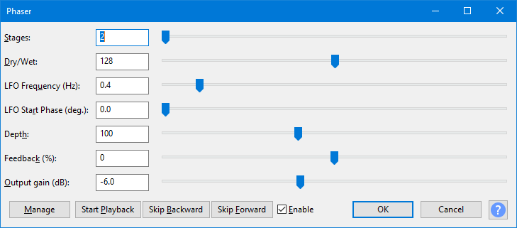

Phaser
The interaction of the phase shifted signal with the original signal creates a sweeping notch filter effect that sounds similar but more subtle than a flanger effect.
- Accessed by:
- 
{kind=link}
| The output from this effect may have higher amplitude than the original audio. If the output exceeds 0 dB (full track height) and so triggers the red clipping warning lights in the Playback Meter, you should open , ensure "Amplification (dB)" shows a negative dB value (not "0.0 dB") then click .
If "Amplification (dB)" in Amplify shows "0.0 dB", the track does not contain 32-bit audio and the clipping cannot be repaired. In that case, Phaser, use Amplify to reduce the track to a lower amplitude then reapply Phaser. |
Stages
The Phaser effect consists of a series of filters that each produce a frequency-dependent delay. By mixing some of the original signal with the delayed signal, phase cancellation will occur at a particular frequency, creating a marked notch (reduction in level) at that frequency. When the original and delayed signals are "in phase" with each other, that frequency will be boosted to a higher level, creating a peak at that frequency. Each "stage" in the effect adds more notches and peaks in the frequency response, giving more complexity to the sound.
Dry/Wet
When set to 0, only the "Dry" (unprocessed) signal is produced. When set to 255 (maximum), only the delayed signals are produced. Because the effect's sound results from phase interaction, the effect sounds strongest when the Dry/Wet mix is set at the default halfway position (128).
LFO Frequency (Hz)
This is a low frequency oscillator (LFO) control that adjusts the rate at which the effect sweeps up and down across the frequency range.
LFO Start Phase (deg.)
The start position of the low frequency oscillator is adjustable between 0 and 360 degrees. When set at zero (the default) the filters begin sweeping from high frequency down to low frequency. When set at 180 degrees, the filters begin by sweeping up from low frequency.
Depth
The depth control governs how high the filter frequencies sweep. At a low setting the phaser will primarily affect bass frequencies. At higher settings the phaser effect can sweep high into the treble.
Feedback (%)
By adjusting the feedback control, the processed signal can be passed back through the effect, creating a more pronounced effect. At high settings, the effect will become highly resonant, similar to a Wahwah effect. At negative settings. an inverted signal is fed back into the effect, creating another variant of the effect.
| At maximum or minimum feedback settings, the effect becomes unstable and will create massive distortion. |
Output gain (dB)
Controls the amount of gain (volume) positive or negative that will be applied by the effect.
Real-time preview
This effect supports Real-time preview - effect settings can be changed while playing and listening to the result in real-time. Text-based button controls are provided as in the image above. The Enable checkbox acts like a live "Bypass" control. Uncheck the checkbox  Enable to hear the audio without the effect applied, and recheck the box
Enable to hear the audio without the effect applied, and recheck the box  Enable to hear the effect applied at its current settings.
Enable to hear the effect applied at its current settings.
The button accesses choices to add, delete, import or export presets for this effect and to set options for this effect. For details see Manage presets.
Buttons
Clicking on the command buttons give the following results:
- gives a dropdown menu enabling you to manage presets for the tool and to see some detail about the tool. For details see Manage presets.
- starts playback of the effect preview
- skips forward through the effect preview
- skips forward through the effect preview
-
 Enable listen to the preview with and without the effect applied
Enable listen to the preview with and without the effect applied - applies the effect to the selected audio with the current effect settings.
- aborts the effect and leaves the audio unchanged.
 brings you to the appropriate page in the Manual, this page.
brings you to the appropriate page in the Manual, this page.